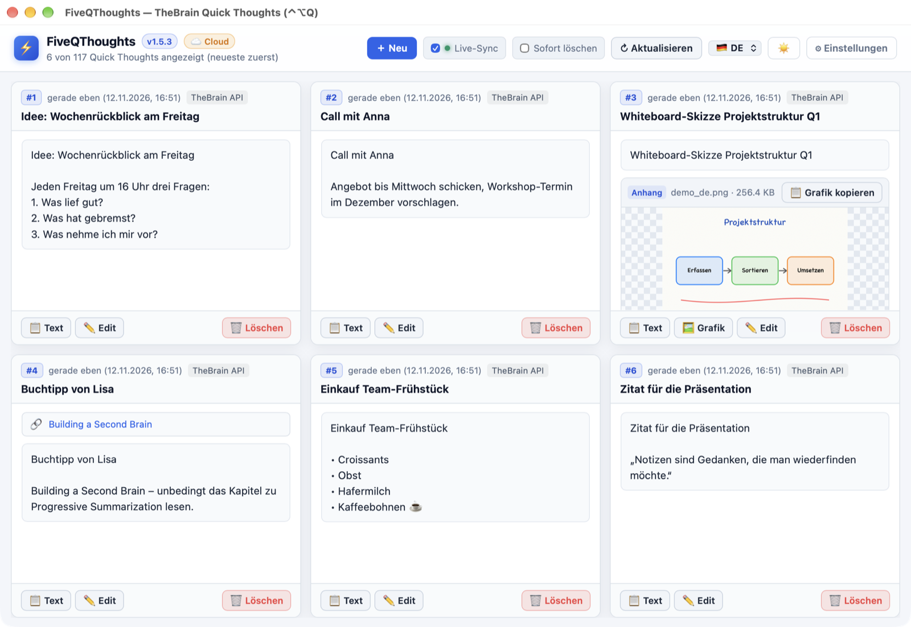
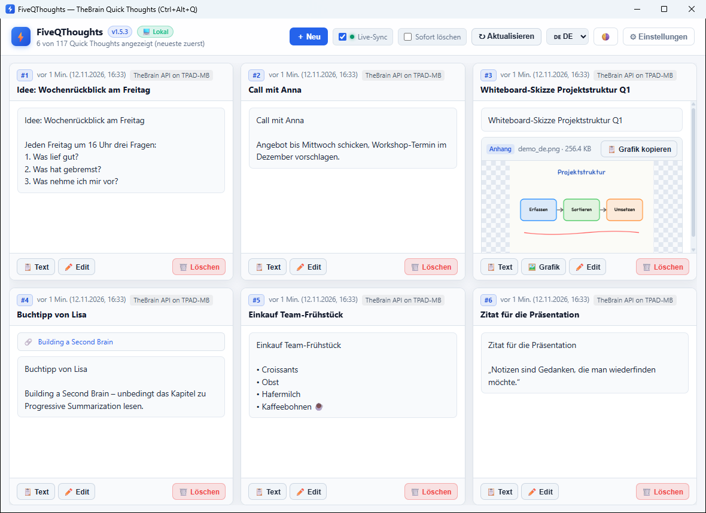
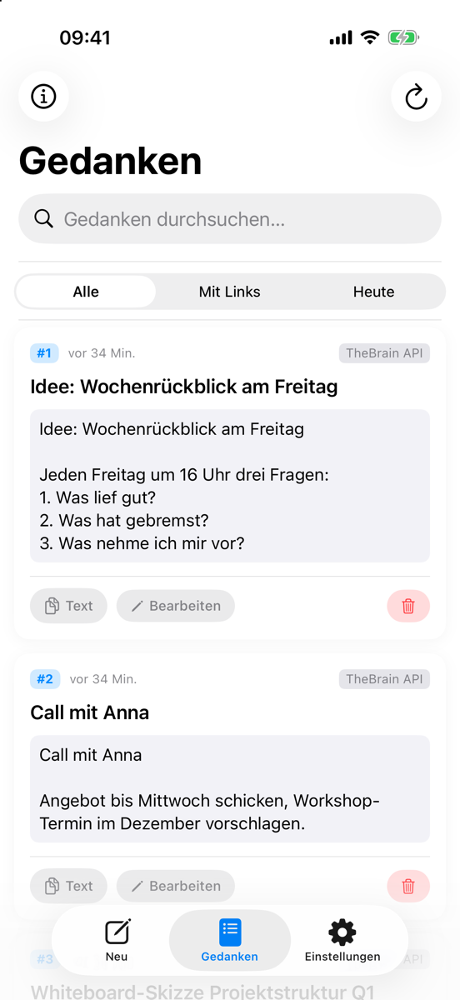
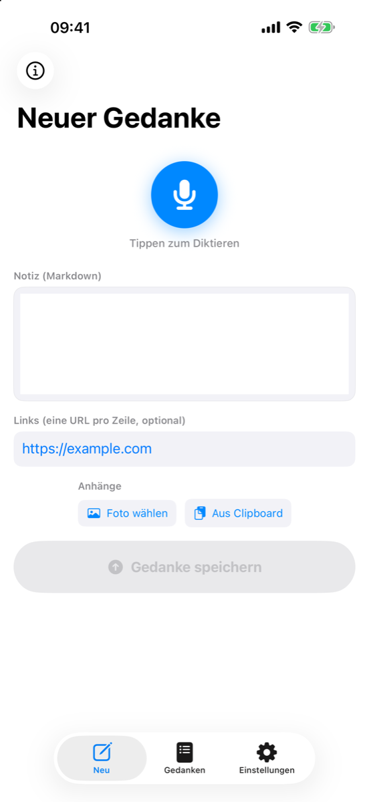
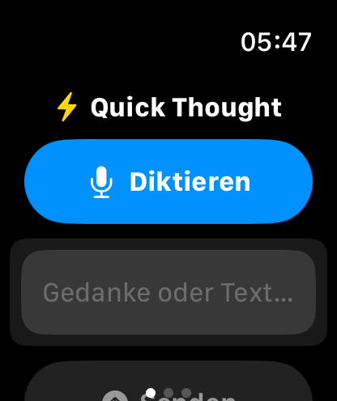
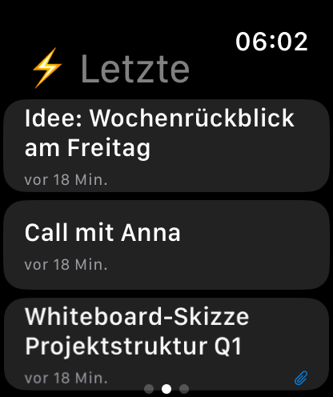

Deine Quick Thoughts.
Immer griffbereit.
FiveQ zeigt die neuesten Quick Thoughts aus TheBrain auf einen Blick – und hält neue Gedanken in Sekunden fest: am Mac oder PC, auf dem iPhone oder per Diktat an der Apple Watch.

Funktionen
Gemacht für den schnellen Blick zwischendurch – und das schnelle Festhalten.
Die neuesten auf einen Blick
Die 5 (oder bis zu 20) neuesten Quick Thoughts als gleich große Kacheln – automatisch aktuell dank Live-Sync.
Blitzschnell erfassen
Neuer Gedanke per Taste N, mit Text, Links und Bildern direkt aus der Zwischenablage.
Diktieren
Auf iPhone und Apple Watch einfach lossprechen – der Gedanke landet direkt in TheBrain.
Kopieren mit einem Klick
Text oder Grafik eines Quick Thoughts direkt in die Zwischenablage übernehmen.
Bearbeiten & Aufräumen
Quick Thoughts ändern, Anhänge ergänzen oder entfernen und Erledigtes löschen.
Globaler Shortcut
⌃⌥Q (Mac) bzw. Strg+Alt+Q (Windows) holt das Fenster aus jeder App nach vorn.
Lokal oder Cloud
Nutzt die lokale TheBrain-Desktop-API und wechselt automatisch zur TheBrain Cloud, wenn TheBrain nicht läuft.
Einfache Einrichtung
API-Key einmal am Desktop eintragen und per QR-Code oder Handoff auf iPhone und Watch übertragen.
Plattformen
Eine Idee, vier Bildschirme.
🖥️ Mac
- Native App mit Dock-Symbol und Menüleisten-Eintrag ⚡5Q
- Globaler Shortcut ⌃⌥Q
- Grafiken als echte Bilder in die Zwischenablage kopieren
- Hell, Dunkel oder automatisch nach System
🪟 Windows
- Eigenständige App mit Tray-Symbol
- Globaler Shortcut Strg+Alt+Q
- Installer ohne Admin-Rechte, optional mit Windows starten
- Kein Python nötig – alles ist enthalten

📱 iPhone
- Gedanken diktieren, tippen oder Fotos anhängen
- Liste mit Suche und Filtern (mit Links, heute)
- Bearbeiten, kopieren, löschen
- Überträgt den API-Key auf die Apple Watch


⌚ Apple Watch
- Gedanken direkt am Handgelenk diktieren
- Haptische Bestätigung beim Speichern
- Die 5 neuesten Quick Thoughts ansehen
- Komplikation fürs Zifferblatt


Installation
Voraussetzung ist ein TheBrain-Konto. Für die mobilen Apps brauchst du einen Cloud-API-Key, für den Desktop wahlweise den lokalen oder den Cloud-Key.
🔑 API-Key besorgen
- Cloud-Key (für iPhone, Watch und Desktop-Fallback): auf app.thebrain.com/api-keys erstellen.
- Lokaler Key (optional, Desktop): in TheBrain unter Settings → User → Local API.
🪟 Windows
FiveQThoughts-Setup-x.y.z.exeherunterladen und ausführen (keine Admin-Rechte nötig).- App starten, auf ⚙ API klicken und den Key eintragen.
- Mit Strg+Alt+Q jederzeit ein- und ausblenden.
Benötigt die Microsoft Edge WebView2 Runtime – in Windows 11 bereits enthalten.
Download🖥️ Mac
- FiveQThoughts herunterladen und entpacken.
FiveQThoughts.appöffnen – beim ersten Start wird die native App eingerichtet.- Auf ⚙ API klicken, Key eintragen. Shortcut: ⌃⌥Q.
Benötigt Python 3.9+ (z. B. über die Xcode Command Line Tools).
Download📱 iPhone & ⌚ Apple Watch
- TestFlight aus dem App Store installieren, den Einladungslink unten öffnen und FiveQ installieren. Die Watch-App ist optional: Sie kommt automatisch auf die Uhr, wenn in der Watch-App auf dem iPhone „Apps automatisch installieren“ aktiv ist – sonst unter „Verfügbare Apps“ nachinstallieren.
- In den Einstellungen den Cloud-Key eintragen – oder am Desktop unter ⚙ API den QR-Code scannen.
- Falls die Watch-App installiert ist, wird der Key automatisch an die Apple Watch übertragen.
Unterstützen
FiveQ ist ein privates Projekt und kostenlos. Wenn dir die App gefällt, freue ich mich über einen Kaffee ☕ oder einen Stern auf GitHub.